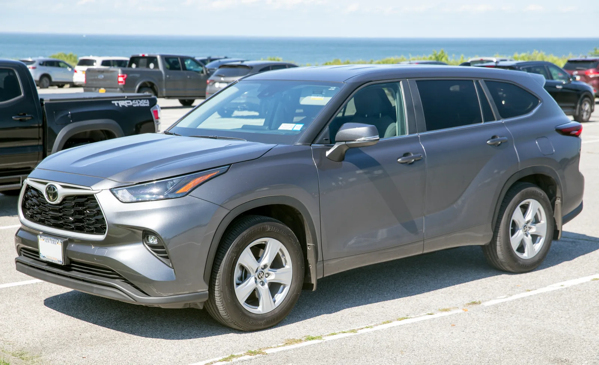
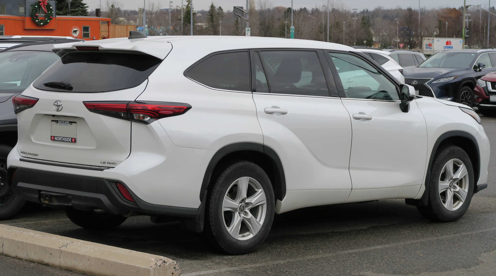
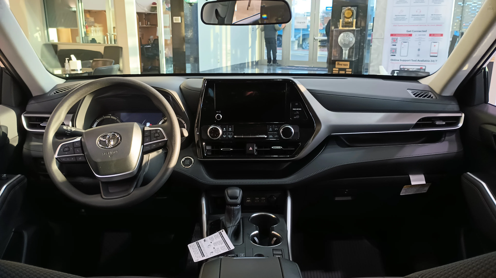

▲ 2026년 토요타 리콜 중 단일 최대 규모(55만 대)를 차지한 하이랜더. 2열 시트백 잠금 결함이 원인이다 ⓒ Wikimedia Commons
2025년, 토요타는 미국 리콜 순위 상위 10위 안에도 들지 않았습니다. 그런데 2026년 들어 상황이 완전히 바뀌었습니다. 4월 중순까지 발표된 리콜만 9건, 대상 차량은 102만 대를 넘어섰고, 이후 캠리·프리우스·랜드크루저 등이 추가로 리콜 명단에 오르면서 규모는 계속 불어났습니다. 한 해 전만 해도 리콜과 거리가 멀어 보이던 토요타가, 왜 갑자기 리콜 상위권의 단골이 됐을까요.
1. "작년엔 순위 밖"이었던 토요타, 넉 달 만에 2위로
미국 도로교통안전국(NHTSA) 집계 기준으로 토요타는 2025년 리콜 대수 상위 10개 제조사에 이름을 올리지 못했습니다. 그런데 2026년 1~4월 발표된 리콜만 9건, 영향을 받은 차량이 102만4,794대에 달하면서 순위가 급변했습니다. 2025년 전체 15건이었던 토요타의 연간 리콜 건수는, 2026년 단 넉 달 만에 거의 그 수치에 근접했습니다.
| 구분 | 2025년 | 2026년(1~4월 기준) |
|---|---|---|
| 리콜 건수 | 15건(연간) | 9건(넉 달 만에) |
| 리콜 대수 순위 | 상위 10위 밖 | 2위권 |
| 영향 대수 | - | 102만4,794대 |
더 눈에 띄는 건 이후의 흐름입니다. 4월 이후에도 캠리(글로벌 65만5,000대), 프리우스(후면도어 오작동, 14만1,286대), 랜드크루저·미라이(계기판 디스플레이, 8만1,893대), 코롤라 크로스(보행자 경고음, 7만3,528대), 타코마(쇼크업소버 부식, 4만8,280대) 등이 잇따라 리콜 명단에 추가됐습니다. 개별 모델·라인별로 중복 집계되는 부분(예: 적재용량 라벨 오류 리콜은 4러너·RAV4·타코마·툰드라 등 8개 차종에 동일하게 적용)까지 모두 더하면, 카프리즘이 집계한 2026년 토요타·렉서스 리콜 목록은 9월 현재 30건 안팎, 연인원 기준으로는 200만 대를 훌쩍 넘는 규모로 불어난 상태입니다.
📍 '100만대'는 통과 지점일 뿐이었다
업계에서 "토요타가 2026년 100만대 리콜을 넘겼다"는 소식이 처음 보도된 건 4월이었습니다. 하지만 이는 연중 최종 규모가 아니라 상반기 초반의 중간 집계였습니다. 이후에도 대형 리콜이 계속 이어지며, 100만대 돌파는 오히려 '시작점'에 가까웠던 셈입니다.
2. 규모로 보는 2026년 토요타 리콜 — 하이랜더·캠리·그 외

▲ 토요타 캠리. 계기판 디스플레이 결함으로 미국에서만 50만8,354대, 전 세계 기준으로는 65만5,000대가 리콜 대상에 올랐다
2026년 토요타·렉서스 리콜 중 규모가 큰 세 갈래를 추려보면 다음과 같습니다.
| 모델 | 대수 | 결함 내용 |
|---|---|---|
| 캠리(글로벌) | 65만5,000대 | 7인치 계기판 미점등, 방향지시등 신호 동반 미작동 |
| 하이랜더 | 55만7대 | 2열 시트백 리클라이닝 잠금 실패 |
| 프리우스 | 14만1,286대 | 후면 도어 주행 중 예기치 않은 개방 |
| 랜드크루저·미라이 | 8만1,893대 | 계기판 클러스터 디스플레이 고장 |
| 코롤라 크로스 | 7만3,528대 | 보행자 경고음 음량 부족 |
| 타코마 | 4만8,280대 | 쇼크업소버 플랜지 부식 |
캠리와 하이랜더, 이 두 리콜의 세부 내용은 카프리즘이 이미 별도로 다룬 바 있습니다. 하이랜더는 2열 시트가 젖혀진 상태에서 고정되지 않아 충돌 시 부상 위험이 커지는 결함으로, 2023년 10월 인디애나 공장 품질 점검 중 처음 발견됐습니다. 원인을 추적한 결과 협력사가 2021년 리클라이닝 부품 설계를 토요타에 통보 없이 바꾼 것으로 드러났습니다. 캠리는 7인치 계기판을 쓰는 SE·LE 트림에서 시동 시 화면이 아예 켜지지 않고 방향지시등·경고음까지 함께 먹통이 되는 결함으로, 2023년 12월부터 2026년 7월까지 생산된 차량이 미국·일본·태국 등 여러 공장에서 겹쳐 나왔습니다.

▲ 하이랜더 LE AWD 후측면. 문제가 된 2열 시트는 이 뒷좌석 유리창 안쪽에 위치한다 ⓒ Wikimedia Commons

▲ 하이랜더 실내. 이번 리콜은 앞좌석이 아닌 2열 리클라이닝 시트의 잠금 장치 결함이 핵심이다 ⓒ Wikimedia Commons
✅ 캠리·하이랜더 외에 새로 눈여겨볼 리콜
· 프리우스 — 주행 중 후면 도어가 예기치 않게 열릴 수 있는 결함, 14만1,286대
· 랜드크루저·미라이 — 캠리와 유사하게 계기판 클러스터 디스플레이 고장, 8만1,893대
· 코롤라 크로스 — 보행자에게 접근을 알리는 경고음이 규정보다 작게 나오는 결함, 7만3,528대
· 타코마 — 쇼크업소버 오일 리저버 용접부 부식으로 탈락 위험, 4만8,280대
3. 왜 하필 2026년, 토요타 리콜이 급증했나

▲ 토요타 본사. 리콜 급증의 배경에는 협력사 관리, 전자장비 비중 확대, 플랫폼 공유 구조가 복합적으로 얽혀 있다는 분석이 나온다 ⓒ Wikimedia Commons
"신뢰성의 대명사"였던 토요타가 왜 2026년 유독 리콜이 몰렸을까요. 개별 리콜 사유는 제각각이지만, 이를 관통하는 몇 가지 공통된 배경이 있습니다.
📍 원인 ① — 협력사 설계 변경, 뒤늦게 발견된 결함
하이랜더 리콜의 발단은 2021년 협력사가 통보 없이 바꾼 부품 설계였습니다. 문제는 이 변경이 2년 넘게 발견되지 않다가 2023년 품질 점검에서야 드러났다는 점입니다. 공급망이 복잡해질수록 협력사 단의 사소한 변경이 뒤늦게 대규모 리콜로 이어지는 구조적 리스크가 커집니다.
📍 원인 ② — 디스플레이·소프트웨어 결함의 동시다발 발생
캠리와 랜드크루저·미라이는 서로 다른 차종이지만 같은 유형의 계기판 디스플레이 결함을 겪었습니다. 차량용 디지털 계기판·인포테인먼트 비중이 커지면서, 동일하거나 유사한 전자 부품·소프트웨어를 여러 차종이 공유하는 구조가 결함의 전파 범위를 넓히고 있다는 지적이 나옵니다. 실제로 bZ·렉서스 RZ·스바루 솔테라가 같은 배터리 ECU 결함으로 동시에 리콜된 사례도 있었습니다.
📍 원인 ③ — 전동화·전장화로 커진 복잡성
GR 수프라의 BMW 공용 스타터 과열, bZ 계열의 배터리 제어장치 결함처럼 전기·전자 부품 비중이 늘어날수록 새로운 유형의 결함이 등장합니다. 기계적 결함 위주였던 과거와 달리, 소프트웨어·반도체·배터리 제어 로직에서 비롯된 결함은 사전에 잡아내기가 더 까다롭다는 것이 업계의 공통된 시각입니다.
다만 리콜 증가를 곧바로 "품질 저하"로만 해석하기는 어렵다는 반론도 있습니다. 리콜은 결함을 숨기지 않고 신고했다는 의미이기도 해서, 오히려 문제를 조기에 파악해 무상 조치하는 절차가 정상적으로 작동하고 있다는 해석도 가능합니다. 다만 같은 해에 이렇게 많은 대형 리콜이 몰린 것 자체는 이례적이라는 점에서, 토요타로서는 품질관리 체계를 다시 들여다볼 필요가 있다는 지적을 피하기 어렵습니다.
4. 포드·GM·스텔란티스와 비교하면

▲ 토요타 툰드라. 엔진 제조 잔해로 인한 정지 위험 결함으로 4만3,566대가 별도 리콜 대상에 포함됐다
2026년 리콜 순위표에서 토요타 혼자만 눈에 띄는 것은 아닙니다. 다만 순위를 비교할 때는 '건수' 기준과 '대수' 기준을 구분해서 봐야 합니다.
| 제조사 | 리콜 건수 | 전년 대비 |
|---|---|---|
| 포드 | 29건 | 40건 → 25% 이상 감소 |
| GM | 11건 | - |
| 스텔란티스(크라이슬러) | 11건 | - |
| 토요타 | 11건 | 같은 기간 전년도 5건 대비 급증(2025년 전체는 15건) |
건수만 보면 포드가 여전히 압도적인 1위입니다. 토요타는 건수 기준으로도 이미 GM·스텔란티스와 나란히 11건으로 공동 2위이며, 하이랜더 55만대, 캠리 65만대처럼 한 건에 수십만 대가 걸린 대형 리콜이 몰린 '대수' 기준으로 보면 격차는 더 커집니다. 포드·GM·스텔란티스·토요타 네 개 회사가 2026년 전체 리콜의 56%를 차지한다는 집계도 있습니다.
✅ 건수 순위와 대수 순위, 왜 다를까
· 건수 기준: 얼마나 자주 리콜을 발표했는가 — 포드가 압도적 1위
· 대수 기준: 리콜당 몇 대가 걸렸는가 — 대형 SUV·세단 위주인 토요타가 불리하게(?) 작용
· 두 기준 모두 '심각도'와는 별개 지표이며, 결함의 위험도는 개별 리콜마다 따로 봐야 함
5. 내 차, 리콜 대상인지 확인하는 방법
2026년 토요타 리콜은 대부분 미국 시장 기준으로 발표됐습니다. 국내 판매 차량이 동일하게 대상에 포함되는지는 차종·생산 시기에 따라 다르므로 개별 확인이 필요합니다.
미국 등록 차량이라면 차대번호(VIN)로 NHTSA에서 직접 조회할 수 있습니다. NHTSA 리콜 조회 바로가기
국내 판매 차량은 국토교통부 산하 자동차리콜센터에서 차대번호로 확인할 수 있습니다. 자동차리콜센터 바로가기
✅ 확인 시 체크리스트
· 차대번호(VIN)는 계기판 하단이나 운전석 도어 안쪽 라벨에서 확인 가능
· 리콜 조치는 원칙적으로 무상이며, 통지서를 받지 못했어도 대상이면 조치받을 수 있음
· 소프트웨어 업데이트형 리콜은 딜러 방문이 필요한 경우가 많으니 사전에 서비스센터에 확인
· 여러 차종에 걸쳐 부품을 공유하는 최근 리콜 특성상, 비슷한 시기 산 다른 토요타·렉서스 차량도 함께 조회해보는 것이 안전
6. 요약
2025년 리콜 상위 10위에도 들지 않았던 토요타가, 2026년에는 4월까지만 102만 대를 리콜하며 미국 리콜 대수 기준 2위권에 올랐습니다. 하이랜더 55만 대(2열 시트 결함), 캠리 65만5,000대(글로벌, 디스플레이 결함)가 핵심이며, 이후 프리우스 후면도어·랜드크루저·미라이 계기판 결함 등이 추가되며 누적 규모는 계속 불어났습니다.
급증의 배경에는 협력사 설계 변경 관리 부실, 디스플레이·소프트웨어 결함의 동시다발 발생, 전동화·전장화로 인한 복잡성 증가가 복합적으로 얽혀 있습니다. 건수로는 여전히 포드가 1위지만, 대수 기준으로는 토요타가 GM·스텔란티스와 함께 상위권을 형성하고 있습니다.
보유 차량이 미국·국내 어느 쪽에서 판매됐든, 차대번호로 리콜 대상 여부를 직접 확인해보는 것이 가장 확실한 방법입니다. 특히 최근 리콜은 여러 차종이 부품을 공유해 함께 걸리는 경우가 많은 만큼, 관련 차량을 보유하고 있다면 한 번쯤 조회해볼 필요가 있습니다.